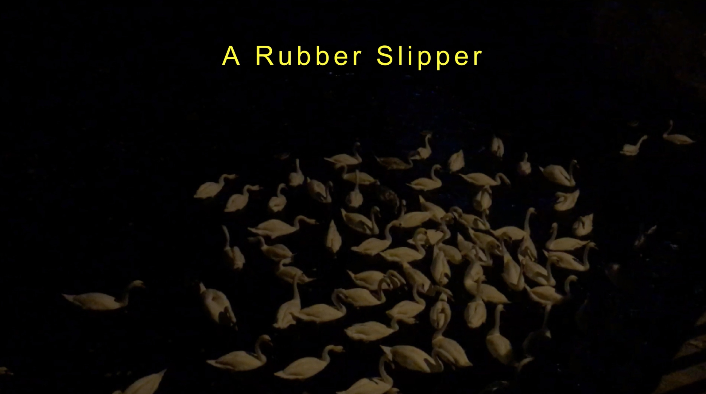

Conversations around climate change and the rise of water levels still place the human at the center: an imminent threat is present, and it's going to change the way we experience everyday life—the 'we' still being at the center.
A Rubber Slipper Considers the flood as an arrival of an overwhelming amount or quantity, and rather than taking into account the damaging effects of water onto man's environment, the piece inverts the phenomenon: how do the products of our consumption colonise and destroy other habitats and life forms.
The icon of the swan sits at the forefront of the work, a bird revered extensively, from Elizabeth's England, Greek and Norse mythology, to Irish legends, Latin American literature, and Hinduism. Swans have mesmerized viewers and have been regarded as the manifestation of grace, love, fidelity, beauty, and the sacred. Within this framework of familiarity, the piece brings viewers into a seemingly untouched part of nature and simultaneously makes them aware of the inextricability of human action in that serene and majestic non-human world.
The piece is accompanied by music produced by myself. Low-pass filtering and varying resonances over a texturally rich drone suggest ominous bounded volumes which allude to the great bodies of water and the toxicity within them. The gradual development of a distorted feedback echo points to a surface rupture and overflow, punctuated by reverberating bass strikes. These strikes represent the human detritus in the body of water, emphasising its colonial presence. The overall mixing together of the separate sounds overwhelms as it entwines the human and non-human world: the characteristic of the flood.
A Rubber Slipper was conceived in collaboration with Salber Williams.
Still from A Rubber Slipper